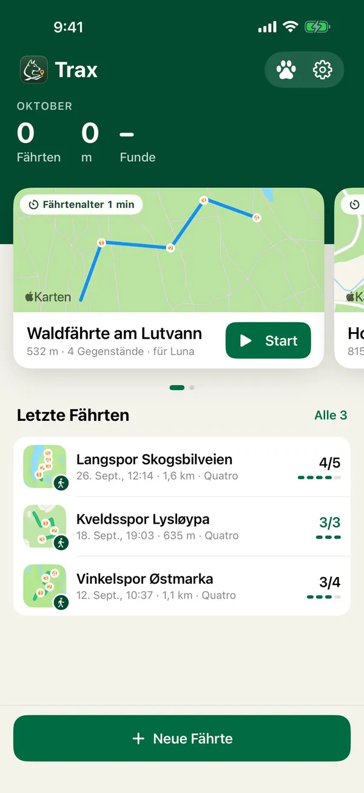
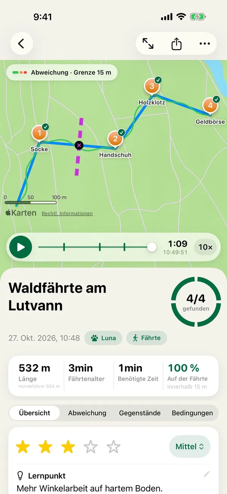
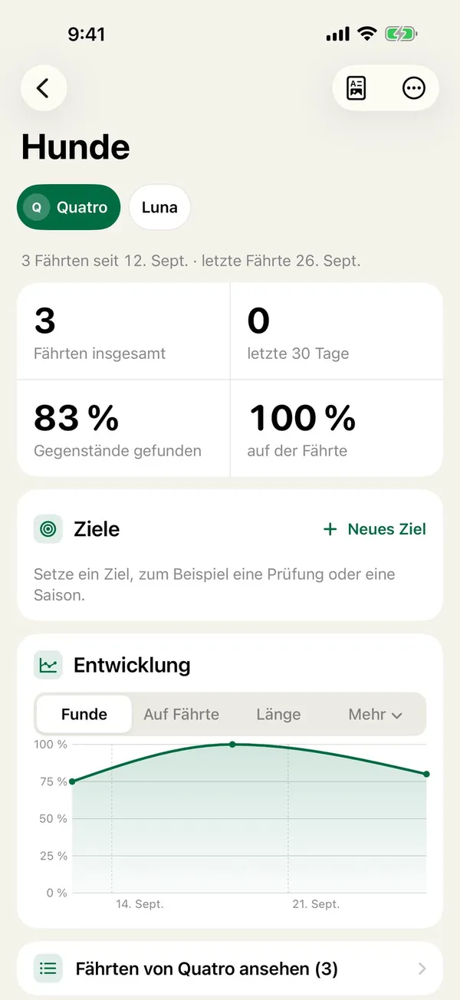
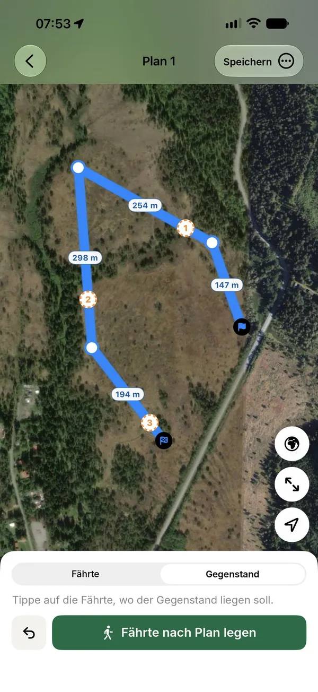
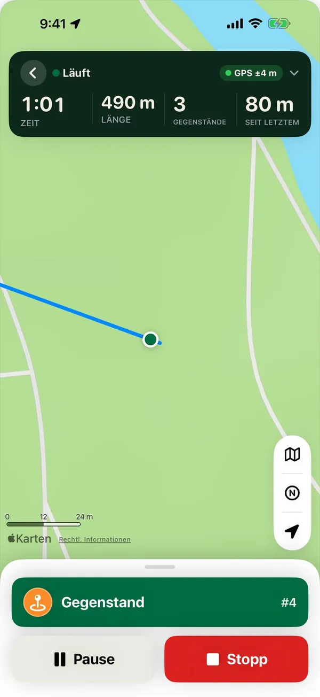
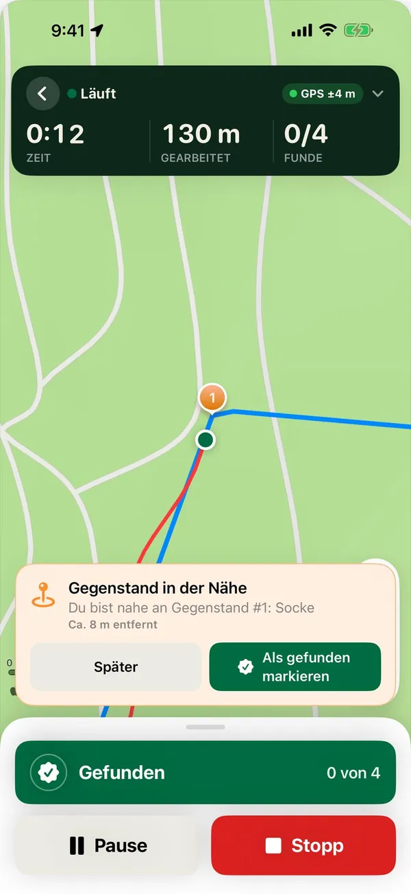
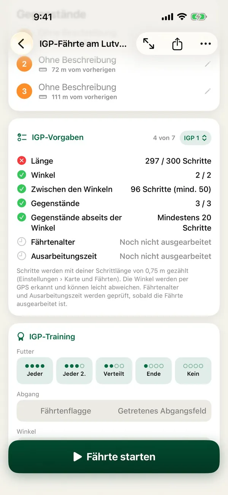
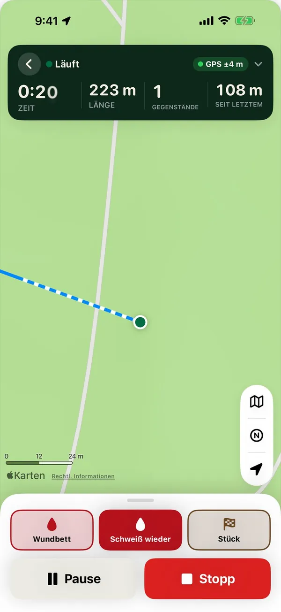
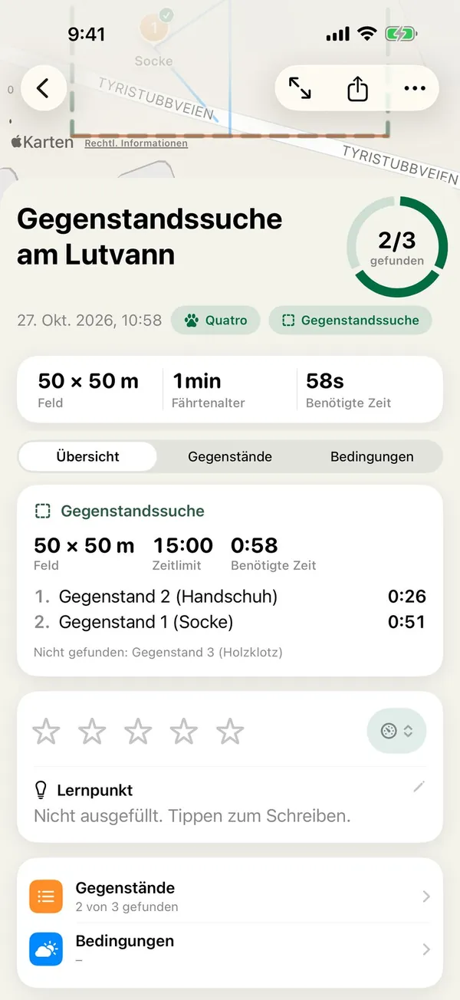
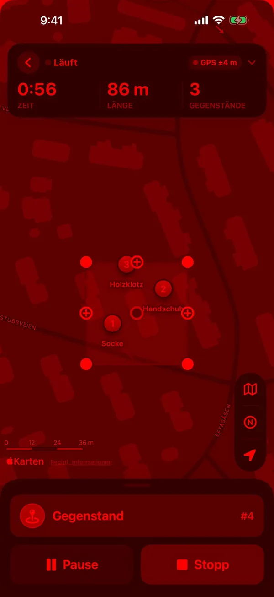

iPhone
Fährtenpläne
Plane den Trainingstag zu Hause. Zeichne die Fährten auf der Karte, fasse sie zu einer Gruppe zusammen und sieh sofort, ob sich welche kreuzen.
Trax zeichnet die Fährte auf, während du sie legst, meldet sich, wenn dein Hund sich einem Gegenstand nähert, und zeigt dir danach, wie gut er die Fährte gehalten hat.
12,99 €, einmalig. Kein Abo, kein Konto, keine Werbung.



So funktioniert es
Zeichne Schenkel und Gegenstände zu Hause auf der Karte und schick den Plan an den Fährtenleger.

Tippe auf „Gegenstand“, wo du etwas ablegst. Trax zeichnet den Weg per GPS auf, zählt das Fährtenalter und meldet sich, wenn die Fährte bereit ist.

Das Handy bleibt in der Tasche. Du hörst es, wenn ihr euch einem Gegenstand nähert, und das Handy vibriert, wenn ihr von der Fährte abkommt.

Spiel die Fährte ab, sieh die Abweichung entlang des Wegs und wie viele Gegenstände dein Hund gefunden hat. Mit der Zeit siehst du die Entwicklung jedes Hundes.
Funktionen
Fährte, IGP-Fährte, Schweißfährte, Gegenstandssuche und Flächensuche in derselben App.
Plane den Trainingstag zu Hause. Zeichne die Fährten auf der Karte, fasse sie zu einer Gruppe zusammen und sieh sofort, ob sich welche kreuzen.
Wiedergabe, Abweichung, Gegenstände und Bedingungen an einem Ort.
Stufen von IGP-V bis FH 3, Vorlage auf der Karte und Schritte im Vergleich zur Vorgabe.

Anschuss, erneuter Schweiß, Wild und Fluchtrichtung.

Zeichne das Feld, setze ein Zeitlimit und sieh die Zeit für jeden Fund.

Kennzahlen, Ziele, Trainingselemente und die Entwicklung jedes Hundes.
Rotes Licht auf dem Bildschirm, wenn du im Dunkeln trainierst.

Gemacht von jemandem, der selbst Fährten trainiert
„Ich trainiere fast jeden Tag mit Hunden, und Fährtenarbeit gehört zu meinen Lieblingsbeschäftigungen.“
Ich habe Trax entwickelt, weil ich eine einfache App wollte, die genau das kann, was die Fährtenarbeit braucht. Ich nutze sie selbst, wenn ich mit meinem Hund Fährten trainiere, und ich verbessere die App laufend, damit sie alles abdeckt, was man braucht. Jede Nachricht beantworte ich selbst.

Ich beantworte jede Nachricht selbst, meist innerhalb von zwei Werktagen.